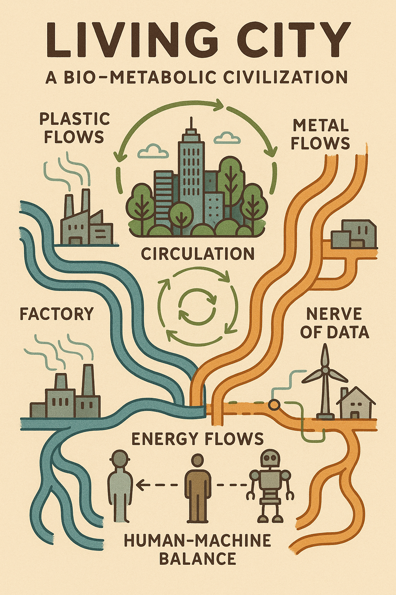
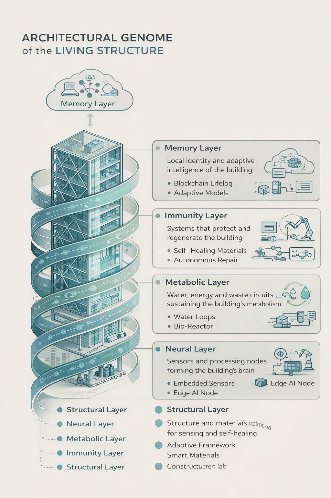
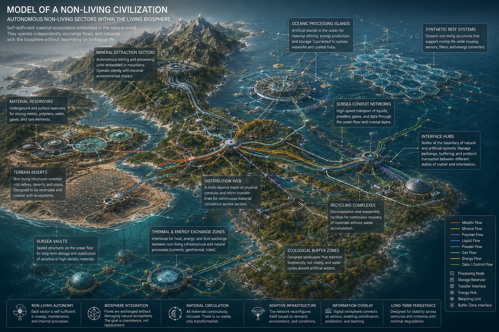

A new ecosystem starts with imagination
A place where schools, clubs, makers, and dreamers can invent living things together.
Egregor Cloud is a friendly online laboratory where a raw idea can become a living house, a sensor creature, a vehicle concept, or a whole new branch of the future with help from AI and other curious people.
Current signal
Stage 1: Open invitation to invent together
Bring in the first schools, clubs, young inventors, Arduino circles, ecology groups, and homegrown labs into one shared creative cloud.
Who This Is For
Built first for curious communities, not institutions
Schools and youth clubs
Turn imagination into projects: living homes, cities, vehicles, and ecosystems shaped with AI.
Makers and Arduino labs
Build sensors, feedback loops, memory nodes, and small organs of future living systems.
Ecology and science groups
Explore closed loops, living materials, self-healing structures, and regenerative ideas together.
Dreamers with no formal training
Bring a fantasy, sketch, or intuition. The cloud helps shape it into a clearer concept.
Manifesto
Simple enough for a club. Big enough for a new civilization.
Not a lecture. Participation.
A visitor should be able to arrive with a strange idea and leave with the beginning of a real project.
Not isolation. Contact.
Clubs, schools, labs, and independent inventors can discover one another through shared living branches.
Not one object. Ecosphere.
Houses are only the beginning. The same genome can later expand into machines, ships, materials, and whole habitats.
Not hype. Growing intelligence.
The cloud learns from every branch, prototype, failed attempt, school experiment, and new collaboration.
Seed Library
First models extracted from your existing project worlds
Living Showcase
Three living things a first visitor should recognize immediately
For schools and youth clubs
Take one living thing and turn it into a class project, imagination lab, or future-world workshop.
Open a school branchFor makers and Arduino circles
Build a sensor, control node, memory module, or small organ that can become part of a living system.
Build a moduleFor dreamers and inventors
Bring a fantasy, sketch, question, or impossible wish. The cloud helps turn it into a shaped concept.
Bring your ideaLiving City
From single living things to a whole city-scale organism
Egregor Cloud is not only about one house, one machine, or one aircraft. It points toward a living civilization where materials, energy, memory, repair, and intelligence circulate through entire urban ecosystems.

Living City Flows
A simple entry image for schools and clubs: materials, energy, data, and people connected as one metabolism.

Architectural Genome
A layered model of living architecture: memory, immunity, metabolism, sensing, and structure growing into one organism.

Civilization Map
A wider planetary systems view: circulation webs, interface hubs, autonomous sectors, and the edge between biosphere and machine.
Model Runtime
How one living house can already work inside the cloud
Selected model
Ready
Choose a model from the library
Click a card above to open its cloud nucleus. The first useful test is the living house branch.
Current genome
Linked systems
Cloud Lab
The minimum viable laboratory for clubs and curious people
How the first online lab works
- A student, maker, or dreamer opens a living model.
- They study linked systems, images, and source notes.
- They add a fantasy, improvement, module, or question.
- The cloud preserves the contribution as part of living history.
- Future AI layers help shape their thought into a clearer concept.
What a small club can do here
- Open a branch around one idea, one sensor, one structure, or one fantasy.
- Keep a visible history of thoughts and experiments.
- Connect your branch to larger living systems later.
- Let AI help turn rough imagination into a project shape.
Cloud Activity
Visitors should see ideas moving, growing, and connecting
Recent thought stream
0 entriesIdea system map
0 tracksGrowth Path
From public seed to autonomous ecosystem
Public signal
Launch the portal, show the vision, and publish the first seed models.
Contribution layer
Let people submit ideas, branches, collaborations, and offers of help.
Shared genome
Connect models by rules, tags, needs, and evolving histories.
Micro-economy
Introduce paid access, licensing, curation, and AI assistance without blocking entry.
Join the Ecosphere
Make the first connection point easy for schools, clubs, and builders
Cloud Connection